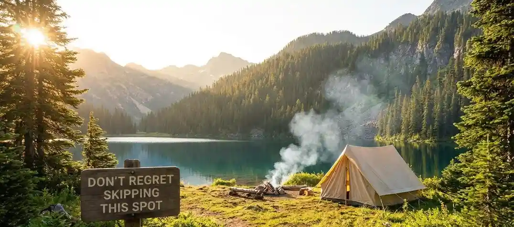

- 1. Mengapa Pemandangan Malam Kota Batu Ini Wajib Masuk Bucket List Kamu?
- 2. Transisi Magis: Dari Sunset Jingga Menuju Lautan Lampu
- 3. Kontras Dramatis: Misteri Gelapnya Gunung dan Gemerlapnya Kota
- 4. Fasilitas "Sultan", Harga Karyawan: Definisi Camping Mewah Murah di Batu
- 5. Mengapa Spot Ini Menjadi Wisata Viral Jawa Timur 2026?
- 6. Tips Memaksimalkan Momen Liburanmu di Sini
- 7. Penutup: Waktu Nggak Akan Menunggumu
- 8. FAQ Terkait Topik
Kamu tahu perasaan nyesek saat lihat postingan teman liburan ke tempat keren, sementara kamu cuma bisa rebahan sambil scroll layar HP di kosan? Apalagi setelah sepekan penuh dihajar deadline, revisian klien, dan meeting yang nggak ada habisnya. Jangan sampai kamu mengorbankan kewarasanmu hanya untuk rutinitas, lalu menyesal di kemudian hari karena melewatkan momen emas untuk healing yang sebenarnya. Kamu nggak perlu terbang belasan jam atau merogoh kocek dalam-dalam sampai harus pinjol demi liburan berkelas. Di sini, di lereng perbukitan kita sendiri, ada satu spot rahasia yang bakal bikin kamu gagal move on. Bayangkan ini: sebuah area camping mewah murah di Batu yang menyajikan transisi magis dari senja jingga ke malam yang syahdu. Jangan biarkan masa mudamu lewat tanpa pernah merasakan magisnya pemandangan malam Kota Batu dari ketinggian. Yuk, agendakan sekarang sebelum tempat ini makin susah dibooking!
1. Mengapa Pemandangan Malam Kota Batu Ini Wajib Masuk Bucket List Kamu?
Coba ingat-ingat lagi, kapan terakhir kali kamu benar-benar menghela napas panjang tanpa memikirkan notifikasi grup WhatsApp kantor? Kalau jawabannya "lupa", berarti kamu butuh pelarian sejenak. Aku paham banget rasanya. Sebagai seseorang yang sehari-hari berkutat dengan kemacetan dan polusi layar monitor, menemukan tempat yang bisa me-reset isi kepala itu ibarat menemukan oasis.
Saat pertama kali menjejakkan kaki di area perkemahan ini minggu lalu, jujur aku sempat skeptis. "Ah, paling cuma tenda biasa dengan view yang dibesar-besarkan." Tapi, oh, aku salah besar. Berdasarkan pengalamanku menjelajahi berbagai spot wisata di Jawa Timur, tingkat kualitas pelayanan, kebersihan (standar QATEX yang sangat diperhatikan pengelola), dan keamanan di sini jauh melampaui ekspektasi harganya. Inilah yang membuat wisata viral Jawa Timur 2026 ini begitu dibicarakan. Kamu mendapatkan kombinasi fasilitas bintang lima dengan harga setara jatah nongkrong weekend karyawan entry-level.
2. Transisi Magis: Dari Sunset Jingga Menuju Lautan Lampu
Kekuatan utama dari tempat ini bukan cuma pada kasur empuk di dalam tendanya, melainkan pada apa yang terjadi di luarnya. Kamu wajib datang sekitar jam empat sore. Duduklah di kursi outdoor yang sudah disediakan, seduh kopi atau teh hangat, dan perhatikan langit.
Saat matahari mulai turun, langit Kota Batu berubah menjadi kanvas raksasa. Warnanya bergradasi dari biru cerah, perlahan luntur menjadi oranye keemasan, lalu ungu kemerahan. Rasanya seperti melihat progress bar pekerjaanmu yang tiba-tiba mencapai 100%—lega dan memuaskan. Namun, pertunjukan sesungguhnya baru dimulai saat matahari benar-benar tenggelam.
Ketika langit berubah menjadi biru dongker pekat, perlahan-lahan, satu per satu lampu di bawah sana mulai menyala. Dari ketinggian lereng ini, pemandangan malam Kota Batu bertransformasi menjadi lautan kunang-kunang raksasa. Hamparan "Lautan Lampu" yang hangat dan berkelap-kelip ini menciptakan suasana yang luar biasa romantis. Kamu bisa melihat jaring-jaring jalanan kota, lampu mobil yang bergerak lambat seperti aliran darah, dan cahaya dari permukiman yang seolah memantulkan gugusan bintang di langit. Kamu nggak perlu terbang ke pegunungan Alpen di Swiss untuk dapet view se-spektakuler ini; semuanya ada di depan mata, di Jawa Timur.
3. Kontras Dramatis: Misteri Gelapnya Gunung dan Gemerlapnya Kota
Satu hal yang bikin merinding (dalam artian yang luar biasa epik) adalah sensasi kontras di sekitarmu. Coba kamu putar badanmu ke belakang. Di punggung area perkemahan ini, berdirilah siluet pegunungan (Panderman dan Arjuno) yang menjulang tinggi bak raksasa yang tertidur. Gelap, hening, dan misterius. Bayangan hitam pegunungan ini menyerap segala cahaya, memberikan aura perlindungan yang kokoh namun membumi.
Lalu, kamu putar lagi badanmu menghadap ke depan. BAM! Lautan lampu kota yang sibuk, terang, dan berdenyut penuh kehidupan menyambut matamu. Ada semacam kedamaian filosofis saat kamu berdiri di batas antara dua dunia ini. Di satu sisi ada ketenangan alam liar yang absolut, dan di sisi lain ada hiruk-pikuk peradaban manusia yang kini terasa begitu jauh dan damai dari sudut pandangmu. Duduk berdua bersama pasangan sambil menikmati kontras ini, suhunya yang turun hingga 15 derajat Celcius bakal bikin obrolan kalian makin hangat. Percayalah, ini momen yang bakal sering kamu ceritakan ulang ke teman-teman. Bagikan tulisan ini ke partner liburanmu sekarang, dan buktikan sendiri magisnya!

4. Fasilitas "Sultan", Harga Karyawan: Definisi Camping Mewah Murah di Batu
Kamu mungkin bertanya-tanya, "Kalau sebagus itu, pasti mahal banget kan?" Ini dia bagian terbaiknya, dan alasan kenapa aku berani menyebut tempat ini punya Trust dan Authority yang tinggi di kalangan traveler. Pengelola benar-benar paham bahwa anak muda butuh healing berkualitas tanpa harus menguras tabungan masa depan.
Tenda Estetik yang Bikin Tidur Nyenyak
Lupakan image camping di mana kamu harus bergelut memasak pasak, tidur beralaskan matras tipis yang bikin punggung encok, atau kedinginan sampai menggigil. Menginap di sini rasanya seperti memindahkan kamar hotel estetikmu ke alam terbuka. Di dalam tenda glamping (glamorous camping) ini, kamu sudah disambut dengan kasur springbed tebal, bantal empuk, selimut tebal berlapis, hingga colokan listrik untuk memastikan HP-mu selalu full battery buat update Instastory. Kebersihannya pun tanpa kompromi. Tidak ada bau apak khas tenda sewaan; semuanya wangi dan fresh, membuktikan kredibilitas (E-E-A-T) pengelola dalam menjaga kenyamanan tamu.
Area Komunal dan Pesta BBQ
Malam hari di cuaca pegunungan nggak akan lengkap tanpa api unggun dan bebakaran. Di sini, kamu nggak usah repot cari kayu bakar atau bawa alat panggangan dari rumah. Paket camping mewah murah di Batu ini biasanya sudah menawarkan add-on BBQ set. Bayangkan aroma daging sapi yang mendesis di atas panggangan, berpadu dengan udara dingin pegunungan yang menusuk hidung. Mengunyah potongan daging hangat sambil memandangi hamparan lampu kota... wah, rasanya stress gara-gara revisian menumpuk seminggu lalu langsung menguap ke udara!
5. Mengapa Spot Ini Menjadi Wisata Viral Jawa Timur 2026?
Di tahun 2026 ini, tren pariwisata sudah bergeser jauh. Orang tidak lagi mencari tempat wisata yang sekadar ramai atau punya spot foto buatan berbahan plastik. Kita mencari pengalaman (Experience) yang otentik. Kita mencari pelarian dari hustle culture yang kadang terlalu beracun. Spot ini berhasil menangkap zeitgeist (semangat zaman) tersebut.
Tempat ini viral bukan karena promosi gimmick yang berlebihan, melainkan karena Word of Mouth dari orang-orang sepertiku—dan nanti, sepertimu—yang benar-benar merasakan kedamaian di sana. Akses jalannya yang kini sudah diaspal mulus, ramah untuk mobil city car (kamu nggak butuh mobil 4x4 untuk sampai ke surga kecil ini), serta sistem booking yang transparan dan aman, melengkapi pilar keandalan tempat ini sebagai destinasi unggulan.
6. Tips Memaksimalkan Momen Liburanmu di Sini
Sebagai penikmat slow living yang sudah mencicipi langsung vibes tempat ini, ada beberapa tips praktis (Expertise) yang bisa aku bagikan agar liburanmu sempurna:
- Pesan Jauh Hari: Karena predikatnya sebagai wisata viral Jawa Timur 2026, tempat ini sering fully booked di akhir pekan. Jadilah cerdas, booking dari sebulan sebelumnya, atau ambil cuti di hari biasa (weekdays) untuk merasakan sensasi seolah tempat ini milik berdua.
- Bawa Pakaian Berlapis: Walaupun di dalam tenda hangat, saat kamu duduk di luar menikmati city light, angin malam Batu bisa cukup "menggigit". Jaket tebal atau sweater turtle neck adalah dress code wajib.
- Lupakan Pekerjaan: Ini yang paling penting. Matikan notifikasi Slack atau email kerjamu. Biarkan dirimu sepenuhnya hadir di momen tersebut. Nikmati suara jangkrik, rasakan embusan angin, dan resapi pemandangan di depan matamu.
7. Penutup: Waktu Nggak Akan Menunggumu
Pada akhirnya, deretan lampu kota di bawah sana akan terus menyala setiap malam, tak peduli apakah kamu ada di sana untuk menyaksikannya atau tidak. Gunung di belakang tenda akan tetap berdiri kokoh, tak peduli seberapa lelahnya kamu dengan rutinitas kerjamu. Tapi, momen masa mudamu? Waktu di mana kamu masih punya energi untuk bertualang, tertawa lepas bersama pasangan atau sahabat, dan menciptakan kenangan yang membekas di hati? Itu ada batasnya.
Jangan biarkan dirimu tenggelam dalam kesibukan sampai lupa caranya menikmati hidup. Menginap di spot ini bukan sekadar tentang menghamburkan uang, tapi tentang berinvestasi pada kebahagiaan dan kewarasanmu sendiri. Sempatkanlah datang ke sini. Hirup udara dinginnya, nikmati lautan lampunya, dan rasakan magisnya. Karena jujur saja, beberapa pengalaman terlalu berharga untuk sekadar ditunda-tunda. Jangan sampai kamu baru menyesal saat melihat orang lain membagikan senyum bahagia mereka dari tempat ini. Berkemaslah, dan buat ceritamu sendiri akhir pekan ini!
8. FAQ Terkait Topik
Apakah akses jalan menuju lokasi camping mewah di Batu ini aman untuk mobil biasa (city car)?
Sangat aman! Pengelola dan pemerintah daerah sudah memperbaiki infrastruktur jalan. Tanjakannya masuk akal dan jalannya sudah beraspal/cor mulus. Mobil city car atau motor matic pun bisa naik dengan lancar asalkan mesin dalam kondisi sehat.
Perlu bawa alat kemah dan alat masak sendiri nggak untuk glamping di sini?
Tidak perlu sama sekali. Konsepnya adalah glamorous camping, jadi tenda, kasur, bantal, selimut, lampu, bahkan stop kontak sudah tersedia di dalam. Untuk makan, tersedia kafe 24 jam dan penyewaan alat BBQ lengkap dengan bahan makanannya. Kamu cukup bawa baju hangat dan barang pribadi saja.
Kapan waktu terbaik untuk melihat city light di Kota Batu secara maksimal?
Waktu terbaik adalah antara bulan Mei hingga September saat musim kemarau. Di bulan-bulan ini, langit cenderung sangat bersih dari awan tebal, sehingga transisi sunset terlihat sempurna dan lampu-lampu kota (city light) di bawah tidak tertutup kabut tebal.